JAIPUR
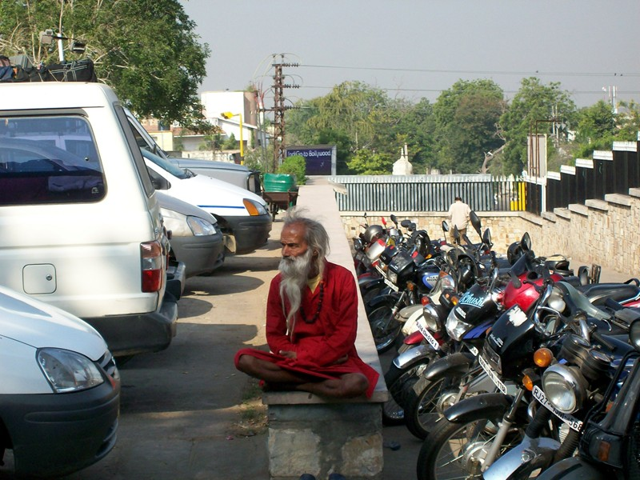
Jaipur is the main town in the desert state of Rajasthan (Land of Kings). There were many kings, forts and in the past, much warfare. Ram said that Jaipur and Kerala are the smart states: they're branding themselves to tourists as destinations, while other states try to squeeze the most money from whatever tourists happen to come. We stayed in a government-built Tourist Hotel, which was half a step up from the usual biker-grade rooms we'd gotten.
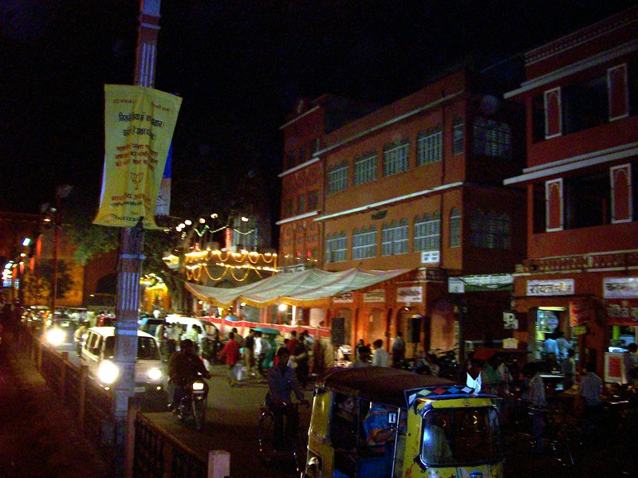
The old part of Jaipur is known as the Pink City. There's also a new part with broad avenues and big buildings, most of them government offices, which seems fundamentally flawed to American eyes. Ram usually squeezed local prices out of reluctant vendors. I got Rajasthani textiles here for Christmas presents, and the system broke down because I'd just spent half an hour picking them out, and was obviously committed. Ram's strategy, in the abence of a price tag, was to demand "Where did you get that (the price)?", then start picking at the rationale. The textile guy answered (I found out later): "Three factors. Size. Quality. White skin."
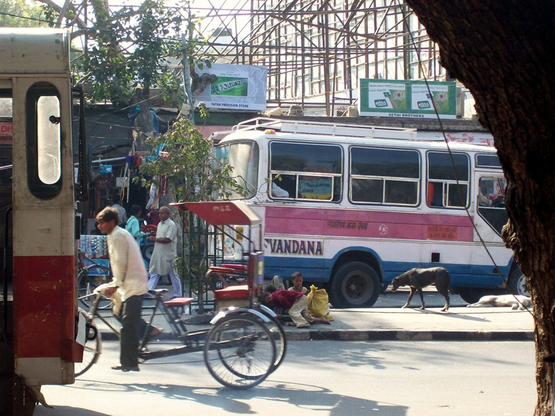
Hungry kids (l) and dying dogs (far right), a familiar street scene in any Indian city.
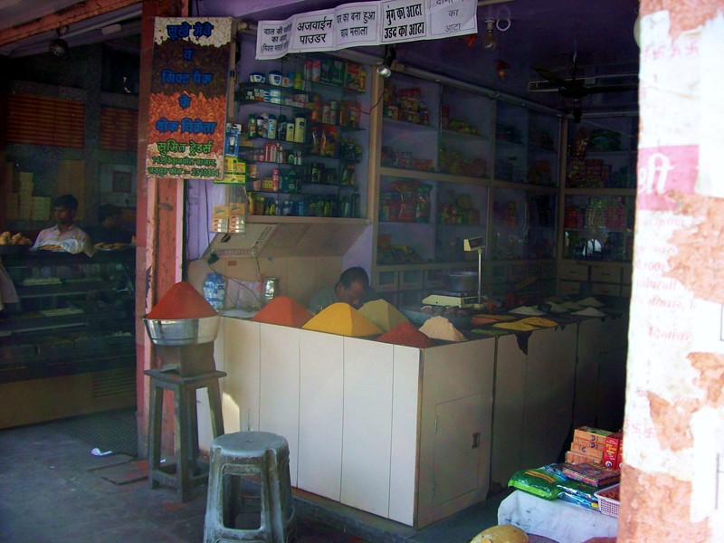
Spice merchant.
Ram bought a suitcase load of a certain kind of gram flour that the Dwarahat ashram had requested that we courier up. That part of the trip got scrubbed due to the picture below.
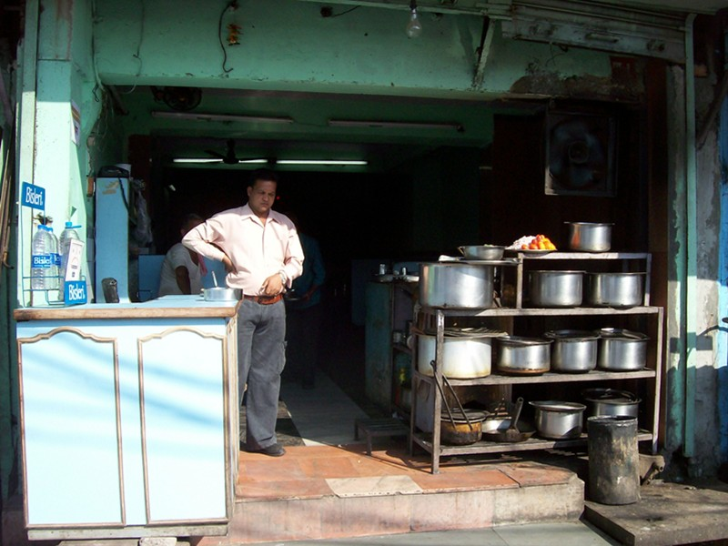
This is the greasy spoon where I got bacterial enteritis (see Delhi page for details). It was the kind of deal where you wanted to wash your hands after handling the menu. The food was good, though. The second night Ram said, "You really enjoyed that meal last night, huh?" By now I knew Ram well enough to know where this was headed. "Sure, let's go back." I think I got e. coli the first night and giardia the second--or was it the other way around?
Why as I eating here in the first place? Ram kept disappearing for an hour evenings. I got him to fess up that he was going to yellow-zone South Indian restaraunts. Knowing that 80% of travelers get sick in India, and having a friend who got enteritis in a 5-star, I decided to eat wherever Ram ate. It took a week or so before I got bit. Even though the coliformies took three days out of the trip, I lost 10 lb and my cholesterol dropped to 40 points.
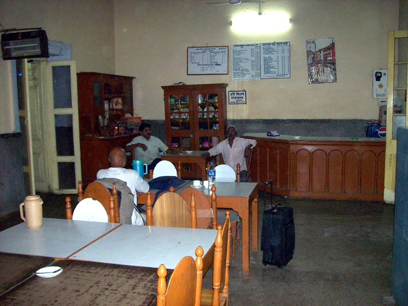 |
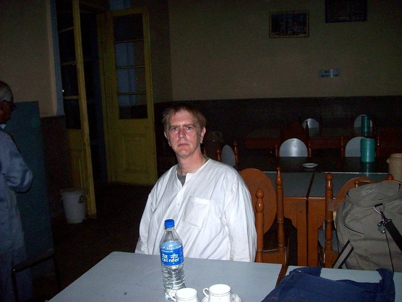 |
Or maybe it was this restaraunt at the train station. Ram held that train station restaraunts were safe; when we got to Delhi, I met up with a friend from Oz who spends several months each year with his elderly parents. Devinder said " You ate at train stations? Oh my God, don't you read the newspapers?"
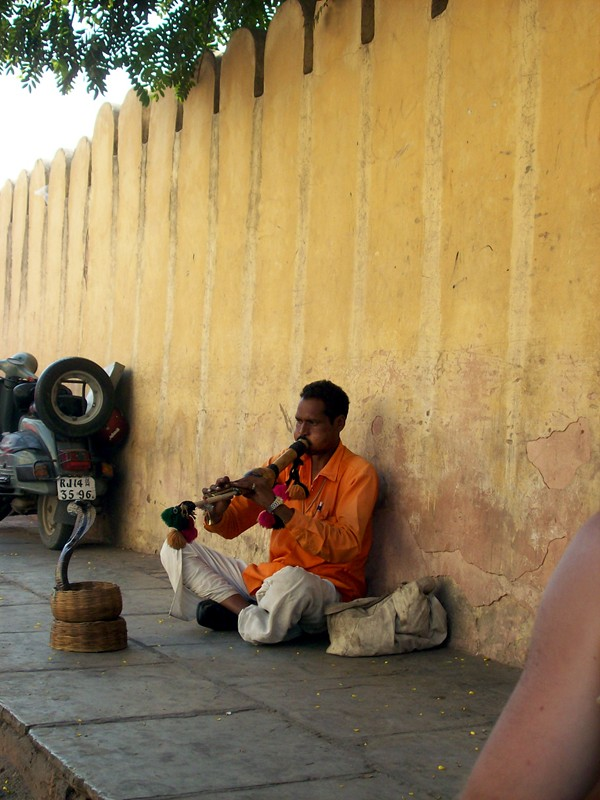
This was the only snake charmer I saw. He's a fake though: after the performance he seized the cobra fearlessly by the head, and Ram confirmed it had been defanged.
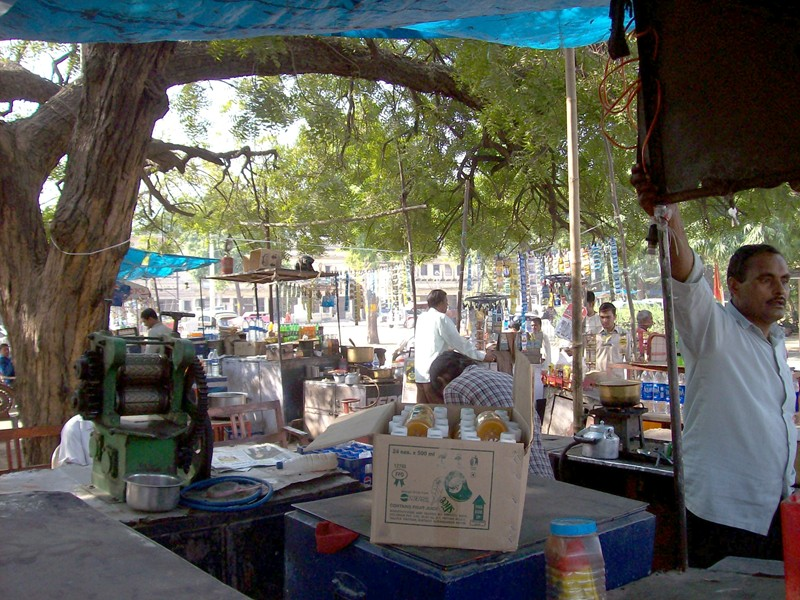
I included this picture to show the sugar cane juice press on the right. These are common on the streets, but I never tried it. They all failed the <1 fly per cc test.
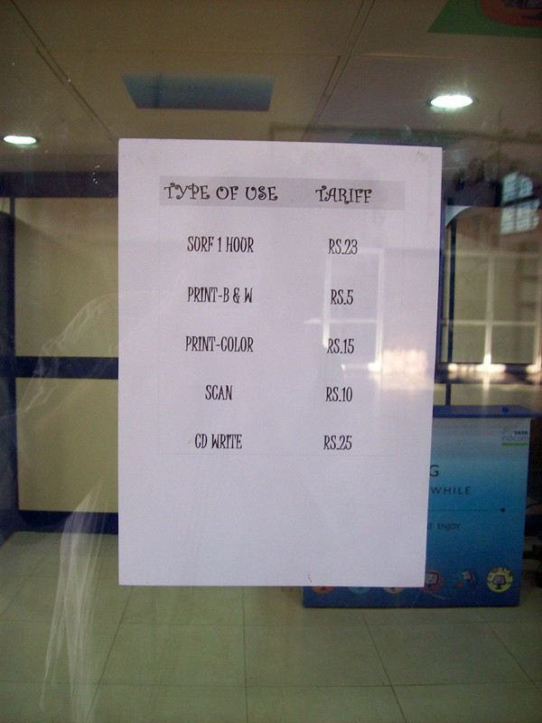
Sorfing the Hoor: Jaipur train station
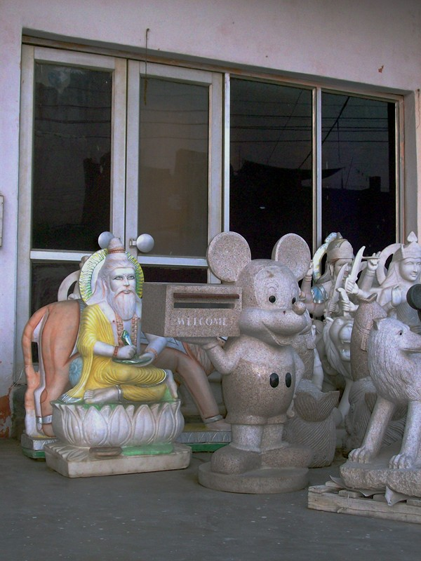
Globalization